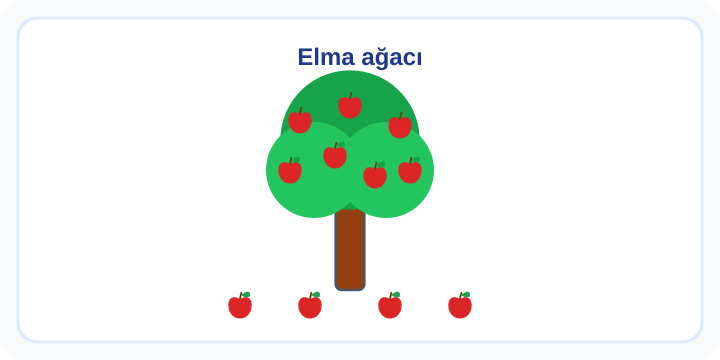

1. Sınıf Matematik Sayılar ve Nicelikler Zor Test 2
Sayıların yalnızca adını bilmek yetmez: bir miktarı göstermek, iki grubu karşılaştırmak ve sayıların sırasını açıklamak da gerekir. Nesnelerden sayı doğrusuna geçerken her adımın neyi temsil ettiğini düşün.
10 soru · Yaklaşık 19 dakika. Bu bir süre sınırı değildir; açıklamaları kendi hızında inceleyebilirsin.
Sayılar ve Nicelikler: konu anlatımı ve çözümlü çalışma
Başlamadan önce dikkat et
Eklenen ilk boncuğu 12 diye saymak bir eksik sonuç verir.
Bu testten iki çözümlü örnek
1. örneği incele
Görseldeki elma ağacının üzerinde 7 elma, altında yere düşmüş 4 elma vardır. Toplam elma sayısını bulmak için hangi sayıyı söylemeliyiz?

- On
- On bir
- On iki
Cevap ve gerekçe
On bir
Ağaçtaki 7 elmayla yerdeki 4 elma birlikte sayılır: 7 + 4 = 11. On bir yanıtı toplamı verir.
2. örneği incele
"12 - 13 - 14 - ? - 16 - 17" Sayı sayarken "?" işareti olan yere hangi sayı gelmelidir?
- 11
- 18
- 15
Cevap ve gerekçe
15
Sayılar birer artıyor. 14'ten sonraki ve 16'dan önceki sayı 15'tir.
Testten sonra kısa çalışma
12 küçük nesne ayır, üç tane ekle; tümünü sayarak kontrol et.
Yanlışlarını Öğren bölümünde kendi cevabını açıklamayla karşılaştır. Bir sonraki denemede cevabı ezberlemek yerine nedenini anlat. Veliler için sonuçları yorumlama
Soruların hazırlanması ve kontrol sınırları · İçerik hatası bildir
Öğrenme alanı: Sayılar ve Nicelikler. Buradaki beceriler çalışma odağını anlatır; resmî MEB öğrenme çıktısı kodları değildir. testcoz.pro, Millî Eğitim Bakanlığı’nın resmî sitesi değildir.
Testleri kayıt olmadan çözebilirsiniz. İsteğe bağlı kayıt, günlük hedef ve öğrenci paneli gibi ek özellikler için sunulur.